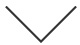

- ITコンサルティング
- プロジェクトマネジメント
- システム開発
- 運用・保守
TWBのITコンサルティング
ＩＴコンサルティングとは、お客様が抱える事業戦略上の課題に対して、IT（情報技術）によって実現可能なことをうまく調整しながら必要
ＩＴシステムを導入し、それらの課題解決の具体化、支援を行うことです。
お客様の課題を明確化して分析し、経営戦略推進のための具体的かつ最適な解決方法を導き出してご提案し、これにより生じたプロジェクト
活動全般についても支援します。
そしてその最終的な目的は、ビジネス上の利益を確実にもたらすことによって、お客様に満足してもらうことです。
一般的なＩＴコンサルは、経営戦略に基づくIT戦略の立案から、それを推進するために必要なＩＴシステムの企画、マネジメント、およびその
構築となりますが、TWBのＩＴコンサルティングでは、これまで数多くのソリューション実績によって培ったノウハウをもとに、お客様の
事業規模に合わせて、よりきめ細かで低コストな、現実的なＩＴ構築を実現します。
こんなお悩みをお持ちの方はご相談ください
- 経営環境に合わせたIT投資をしたい
- 経営問題を抱えているが原因がはっきりしない
- システムを導入したが期待ていた効果が出ない
- 業務効率化や営業力強化が経営上の課題
- システムを導入したいが具体的な提案ができない
- どの改善点から手をつけていいのかわからない

- マネジメント支援
- 経営課題及び実施課題を明確化し、具体的な解決策を提案します。
- 業務改革支援
- プロジェクト活動全般を支援し、業務改革の実行を支援します。
- IT導入支援
- 課題解決を実現するためのIT導入・活用を支援します。